Anjuta
Dieser Artikel wurde für die folgenden Ubuntu-Versionen getestet:
Dieser Artikel ist mit keiner aktuell unterstützten Ubuntu-Version getestet! Bitte diesen Artikel testen und das getestet-Tag entsprechend anpassen.
Zum Verständnis dieses Artikels sind folgende Seiten hilfreich:
Anjuta  ist eine vollständige Entwicklungsumgebung (IDE) für den GNOME-Desktop, die mit vielen Programmiersprachen (C, C++, Python, Java ...) zurecht kommt. Sie kann durch Plugins beliebig erweitert werden, allerdings wird aufgrund der Fülle an Plugins nur auf eine Auswahl eingegangen.
ist eine vollständige Entwicklungsumgebung (IDE) für den GNOME-Desktop, die mit vielen Programmiersprachen (C, C++, Python, Java ...) zurecht kommt. Sie kann durch Plugins beliebig erweitert werden, allerdings wird aufgrund der Fülle an Plugins nur auf eine Auswahl eingegangen.
Diese Seite soll helfen, mit dieser IDE vollständige Programme zu erstellen. Dabei wird erklärt, wie Bibliotheken zu einem Projekt richtig hinzugefügt werden, eine grafische Oberfläche für GTK+ mit dem Glade-Plugin erstellt und aus diesem Programm ein Paket gemacht wird. Des Weiteren wird sich das Beispielprogramm bei der Installation automatisch ins GNOME-Menü integrieren.
Dieser Artikel bezieht sich auf die Programiersprache C, allerdings lässt sich die Arbeitsweise auf die meisten anderen Programmiersprachen fast eins zu eins übertragen.
Voraussetzung¶
Hier eine Auswahl der wichtigsten Pakete, die generell zur Software-Entwicklung in der Sprache C benötigt werden:
build-essential
autogen
automake
libtool
libglade2-dev
libgtk2.0-dev
libgnome2-dev
libgtk2.0-doc
libgnome2-doc
intltool
 mit apturl
mit apturl
Paketliste zum Kopieren:
sudo apt-get install build-essential autogen automake libtool libglade2-dev libgtk2.0-dev libgnome2-dev libgtk2.0-doc libgnome2-doc intltool
sudo aptitude install build-essential autogen automake libtool libglade2-dev libgtk2.0-dev libgnome2-dev libgtk2.0-doc libgnome2-doc intltool
Diese Liste kann je nach Bedarf ggf. noch erweitert werden.
Installation der Entwicklungsumgebung¶
Installation aus den Ubuntu-Quellen¶
Es wird einfach das nachfolgend genannte Paket installiert [1]:
anjuta (universe [2])
mit apturl
Paketliste zum Kopieren:
sudo apt-get install anjuta
sudo aptitude install anjuta
Wer dazu eine umfangreiche Hilfe möchte, installiert ebenfalls
devhelp
mit apturl
Paketliste zum Kopieren:
sudo apt-get install devhelp
sudo aptitude install devhelp
Für grafische Oberflächen eignet sich
glade (universe)
Die Anwendungen können anschließend über das GNOME-Startmenü aufgerufen werden.
Lässt sich Anjuta nicht erfolgreich starten, hilft es unter Umständen, wenn im persönlichen Ordner das versteckte Verzeichnis .anjuta gelöscht wird, sofern dieses noch aus einer früheren Installation stammt.
Installation aus dem Quellcode¶
Für die Kompilierung der Programme werden folgende Pakete benötigt:
libbonoboui2-dev
libgnomeui-dev
libwnck-dev
firefox-dev
libgnomeprint2.2-dev
libgnomeprintui2.2-dev
libvte-dev
libxslt1-dev
libpcre3-dev
binutils-dev
mit apturl
Paketliste zum Kopieren:
sudo apt-get install libbonoboui2-dev libgnomeui-dev libwnck-dev firefox-dev libgnomeprint2.2-dev libgnomeprintui2.2-dev libvte-dev libxslt1-dev libpcre3-dev binutils-dev
sudo aptitude install libbonoboui2-dev libgnomeui-dev libwnck-dev firefox-dev libgnomeprint2.2-dev libgnomeprintui2.2-dev libvte-dev libxslt1-dev libpcre3-dev binutils-dev
Für die Installation wird der aktuelle Quellcode von der Projektseite herunterladen.
Folgende zusätzliche Pakete müssen ebenfalls auf der Anjuta-Seite als Quelltext heruntergeladen dann entpackt [4] und kompiliert [6] werden, falls die Pakete in den Quellen zu alt sind.
gdl
gnome-build
glade3
devhelp
Erst danach kann man das eigentliche Anjuta-Paket kompilieren [6] und installieren. Wenn alles geklappt hat, erscheint jetzt im GNOME-Menü unter "Programmierung" der Eintrag "Anjuta - IDE".
Ein neues Projekt erstellen¶
Der Umgang mit der Anjuta-Oberfläche soll an einer Hello-World-Anwendung gezeigt, welche immer mehr ausgebaut wird.
"Datei -> Neu -> Projekt" öffnet den Druiden, der hilft, das neue Projekt einzurichten. Dieser wird kurz darauf geöffnet und enthält auch eine Beschreibung über den Zweck des Programms. Als nächstes wird der Typ ausgewählt. In diesem Fall erstellt "Generic" eine Vorlage mit grundlegenden Dateien zur Dokumentation, Kompilierung und einer Quelltextdatei mit einer Minimalroutine.
Im nächsten Dialog werden Daten hinzugefügt, welche das Projekt näher beschreiben.
Der Name des Projekts sollte in diesem Falle
tutorheißen.Unter "Destination" wird das Verzeichnis eingetragen, in welchem das Projekt gespeichert werden soll.
Falls schon vorher bekannt ist, welche Bibliotheken verwendet werden sollen, kann man "Configure external package" auf "Ja" stellen.
Im letzten Schritt beim Konfigurieren der externen Pakete steht u.a. für den Eintrag gtk+-2.0 >= 2.10.6. Daher wird der ./configure - Aufruf dem Benutzer später eine Fehlermeldung geben, falls die installierte Version kleiner als 2.10.6 ist. Dazu später mehr im Abschnitt Bibliotheken hinzufügen.
Folgende Bildserie veranschaulicht den Vorgang:
| 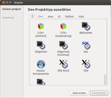 |
| Projekttyp |
| 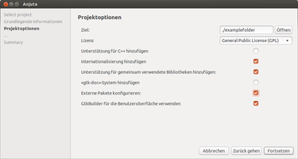 |
| Basisinformationen |
| 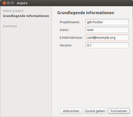 |
| Projektoptionen |
| 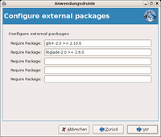 |
| externe Pakete konfigurieren |
Programm erstellen, kompilieren und ausführen¶
Jetzt wird erst einmal automatisch ./autogen.sh beziehungsweise ./configure ausgeführt und es erscheinen mehrere Meldungen im unteren Bereich von Anjuta. Falls dies nicht der Fall sein sollte, kann man auch auf "Generieren -> Run Autogenerate" klicken. Wenn man etwas an den Compiler oder Linkereinstellungen verändert (z.B. Bibliotheken einfügen), sollte man diesen Befehl erneut aufrufen. Denn das autogen-Skript erzeugt die Dateien für den Befehl ./configure welcher wiederum die Dateien für make bereitstellt.
Links im Bild sieht man den Projektbaum (im Projekt-Tabulator). Ein Doppelklick auf main.c unter dem Ast "tutor" präsentiert die Anwendung. In dem Quelltext steht bislang nur der Befehl zur Textausgabe:
1 2 3 4 5 6 | #include <stdio.h> int main() { printf("Hello world\n"); return (0); } |
Um die Anwendung zu kompilieren kann man auf "Erstellen -> Compile" klicken oder
F9 drücken. Der Compiler meldet im Ausgabefenster "succesfull!" Der Befehl zum Kompilieren [6] nennt sich make und kann natürlich auch wie gewohnt manuell im Terminal aufgerufen werden.
Gestartet wird das Programm mit "Ausführen -> Ausführen" oder
F3 . Zum Starten im Terminal würde man ohne grafische Oberfläche einfach ./tutor verwenden. Nach Start des Programms öffnet sich ein Terminalfenster mit folgender Ausgabe:
Hello world
Bibliotheken hinzufügen¶
Um unter Anjuta eine Bibliothek hinzuzufügen, gibt es mehrere Möglichkeiten auf die im Folgenden kurz eingegangen wird.
pkg-config¶
| 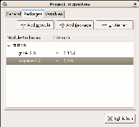 |
| Projekt-Eigenschaften |
Wenn die gewünschte Bibliothek von pkg-config unterstützt wird, hat man in der Regel leichtes Spiel. Dann überprüft ein Makro welche Version vorhanden ist und gibt einem die entsprechenden Pfade für die Konfiguration zurück. Möchte man eine Liste der unterstützten Pakete haben und dann anschließend erfahren, welche Version dieses Pakets auf dem System installiert ist, so kann man das im Terminal durch folgende Befehle erreichen:
pkg-config --list-all pkg-config gtk+-2.0 --modversion
Unter Anjuta klickt man dazu auf "Project -> Properties" und dann auf den Reiter "Packages". Um nun eine neue Bibliothek einzufügen, klickt man als erstes auf "Add module" mit dem Namen TUTOR. Der Name ist eine Art Variable, die die Information über die Bibliotheken enthalten soll. Mit "Add Package" kann man dann die Bibliothek zur Liste hinzufügen. Falls eine Versionsüberprüfung erwünscht ist, trägt man noch in der rechten Spalte >= Versionnummer ein. Wobei statt dem Wort Versionsnummer die entsprechende Zahl eingegeben werden muss.
Durch diesen Schritt wird veranlasst, dass die zwei Variablen $(TUTOR_CFLAGS) und $(TUTOR_LIBS) erzeugt werden und diese entsprechenden Optionen für den Compiler und den Linker enthalten.
| 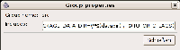 |
| Gruppen-Eigenschaften |
Um dem Compiler dies mitzuteilen klickt man mit  auf "src -> Properties" im Projekt - Fenster. Dort ergänze man zu den vorhanden Einträgen
auf "src -> Properties" im Projekt - Fenster. Dort ergänze man zu den vorhanden Einträgen $(TUTOR_CFLAGS). Diese Variable enthält die Pfade, die man auch mit dem Befehl pkg-config gtk+-2.0 --cflags erhalten würde.
| 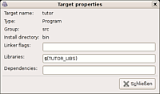 |
| Ziel-Eigenschaften |
Für den Linker ist die Prozedur sehr ähnlich. Allerdings klickt man hier stattdessen auf den Programmnamen, in diesem Fall "tutor -> Properties" im Projekt - Fenster. Dort ergänzt man den Eintrag $(TUTOR_LIBS) unter "Libraries". Die Variable enthält die Pfade, die man auch mit dem Befehl pkg-config gtk+-2.0 --libs erhalten würde.
An der Stelle wird noch kurz erklärt, was Anjuta intern in den Dateien verändert hat. Die wichtigste Dateien, von Automake / Autoconf sind configure.ac und Makefile.am. Man kann diese Dateien ohne Probleme in Anjuta öffnen und editieren. Die IDE erkennt selbständig Änderungen und bessert automatisch die Menüeinstellungen aus. Zunächst einmal wurde in die configure.ac folgendes Makro eingefügt:
1 2 3 | PKG_CHECK_MODULES(TUTOR, gtk+-2.0 >= 2.10.6 libglade-2.0 >= 2.6.0) AC_SUBST(TUTOR_CFLAGS) AC_SUBST(TUTOR_LIBS) |
Das bedeutet salopp ausgedrückt: Überprüfe ob gtk+-2.0 und libglade-2.0 in den richtigen Versionen vorliegen und fülle die Variablen $(TUTOR_CFLAGS) und $(TUTOR_LIBS) mit den entsprechenden Werten.
In der Datei src/Makefile.am findet man die Ausdrücke TUTOR_CFLAGS- und TUTOR_LIBS-Variable wieder, die dem Compiler und dem Linker die Pfade und Bibliotheken mitteilen:
1 2 3 4 5 6 7 | INCLUDES = \ -DPACKAGE_LOCALE_DIR=\""$(prefix)/$(DATADIRNAME)/locale"\" \ -DPACKAGE_SRC_DIR=\""$(srcdir)"\" \ -DPACKAGE_DATA_DIR=\""$(datadir)"\" \ $(TUTOR_CFLAGS) tutor_LDADD = \ $(TUTOR_LIBS) |
Jetzt muss nur noch autogen.sh ausgeführt werden. Das erreicht man durch "Generieren -> Run autogenerate". Damit sind die die Bibliotheken richtig zum Projekt hinzugefügt und man kann sich ganz dem Programmieren widmen.
m4-Skript¶
Diese Art eine Bibliothek hinzuzufügen ist nicht viel komplizierter. Man sollte sich dennoch damit beschäftigen, da es relativ viele Bibliotheken gibt, die pkg-config nicht beherrschen (z.B. wxWidget, SDL, ... ). Die meisten Bibliotheken installieren eine Makrodatei mit der Endung .m4 ins Verzeichnis /usr/share/aclocal Öffnet man die entsprechende Datei, so wird meist am Anfang erklärt, wie dieses Makro mit automake zu benutzen ist. Zum Beispiel trägt man, wenn man die SDL-Bibliothek benutzen will, folgendes Makro in die Datei configure.ac des Projektes ein:
1 2 3 4 5 6 7 | dnl Checks for libraries.
dnl Check for SDL
SDL_VERSION=1.2.0
AM_PATH_SDL($SDL_VERSION,
:,
AC_MSG_ERROR([*** SDL version $SDL_VERSION not found!])
)
|
Dieses Makro überprüft die Version und legt die Variablen $(SDL_CFLAGS) und $(SDL_LIBS) an. Diese müssen wie bei der pkg-Methode dem Compiler und dem Linker mitgeteilt werden. Dies funktioniert analog zur oben beschriebenen Methode.
Danach sollte wieder autogen.sh ausführt oder auf "Generieren -> Run Autogenerate" geklickt werden.
Experten-Info:
Es gibt verschiedene Möglichkeiten, die das Einfügen solcher Bibliotheken erleichtern:
Einen Assistenten schreiben, der das Konfigurieren übernimmt und die entsprechenden Zeilen automatisch in die Dateien einfügt, wenn man den Anwendungsdruiden ausführt. Hier könnte man sich als Beispiel den wxWidgets Wizard genauer ansehen.
Das Macro Plugin aktivieren ("Einstellungen -> Plugins") und für Bibliotheken entsprechende Makros erstellen.
Selbst ein Plugin für Anjuta entwickeln. Informationen dazu gibt es in der Anjuta Entwicklerdokumentation
Direkte Pfadangabe¶
Achtung!
Diese Methode scheint am einfachsten, ist jedoch problembehaftet, eher unsauber und daher wenn möglich zu vermeiden.
Man kann natürlich die Bibliotheken auch einfach hinzufügen, indem man auf "src -> Properties" klickt und sdl-config --cflags oder die direkten Pfade -I/usr/include/SDL -D_GNU_SOURCE=1 -D_REENTRANT einfügt. Dasselbe gilt für die Linkereinstellungen, in diesem Fall sdl-config --libs oder -L/usr/lib -lSDL -lpthread unter "tutor -> Properties"
Diese Methode funktioniert zwar auch, führt aber keine Versionsüberprüfung durch. Außerdem werden die Pfade nicht automatisch eingestellt. Es wird dann beim configure-Prozess kein Hinweis ausgegeben, dass die Bibliothek fehlt oder der Pfad nicht gefunden wurde. Beim Kompilieren werden dann teilweise kryptische Fehlermeldungen ausgegeben, die schwer zu interpretieren sind.
Grafische Oberfläche erstellen¶
| 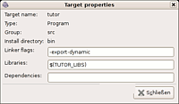 |
| Ziel-Eigenschaften |
Mit Anjuta kann man zusammen mit dem Glade-Plugin auch komplette graphische Oberflächen auf eine sehr kompfortable Art und Weise erstellen.
Vorbereitungen¶
Damit Autoconnect Signale automatisch mit ihrer entsprechenden Callback-Funktion verbunden werden, muss die Linkereinstellungen noch um die Option -export-dynamic erweitert werden.
Glade Datei erstellen¶
Das Glade-Interface-Designer-Widget findet man unter "Datei -> Neu -> Glade File". Es gibt hier vier wichtige Bereiche:
| Glade-Interface-Designer | |
| Fenstername | Erklärung |
| Palette | Dieser Bereich enthält alle Steuerelemente (Buttons, Textwidget,...) |
| Designer | Eine Art graphischer Editor, in den die Steuerelemente gezogen werden können. |
| Widgets | Alle Elemente (Buttons, Window, Container, ...) heißen Widgets. Die Elemente, die im Designer sichtbar sind, sind hier in einer Baumstruktur angeordnet und können ausgewählt werden um ihre Eigenschaften zu verändern |
| Properties | Im Eigenschaftsfenster kann man jedem Widget z.B.. Signale ( auf Button), Größe usw. zuordnen |
Für unser Beispiel bauen wir nun folgende Oberfläche:
| 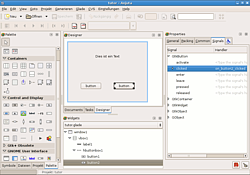 |
| Glade-Interface-Designer |
"Toplevels -> Neues Fenster" 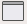
"Containers -> Vertical Box" (Anzahl der Elemente: 2)
Oberer Teil des Containers:
"Control and Display -> Label" 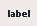 (unter "Properties: General -> Beschriftung":
Dies ist ein Text)
Unterer Teil des Containers:
"Containers -> Horizontal Button Box" 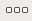 (Anzahl der Element 2, unter "Properties: Anordnungsstil -> Spread")
Linke Seite und rechte Seite jeweils eine Schaltfläche 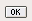 einfügen
Jetzt noch ein paar Signale zuordnen, die beim auf die Schaltflächen ausgelöst werden sollen:
| Signal | Handler |
| "window1: Properties -> Signals -> Gtk-Widget -> delete-event" | gtk_main_quit |
| "button1: Properties -> Signals -> GtkButton -> clicked" | on_button1_clicked |
| "button2: Properties -> Signals -> GtkButton -> clicked" | on_button2_clicked |
Wenn alles so aussieht wie auf dem Bild rechts, muss das Glade Projekt nur noch gespeichert mittels "Glade -> Save as" gespeichert werden. Als Dateinamen tutor.glade wählen und sie im /src - Verzeichnis speichern. Dannach wird das Glade-Plugin über "Glade -> Close" beendet.
Dateien zum Projekt hinzufügen¶
Die erzeugte Glade Datei muss jetzt noch zu diesem Projekt hinzufügt werden, schließlich will man ja, dass die Datei beim Installieren des Programms auch mit installiert wird. Wenn man eine neue Datei zu einem Projekt hinzufügen möchte (dies gilt auch für andere Dateien, wie z.B. Icons), geht man folgendermaßen vor:
| 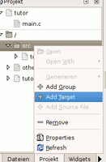 |
| Add Target |
| 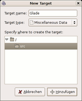 |
| Target Glade erzeugen |
| 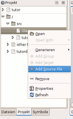 |
| Add Source File |
| 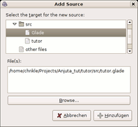 |
| tutor.glade hinzu fügen |
Im Projekt Fenster auf "src" klicken und dann auf "Add Target". Dieses Zielen wird nun Glade genant. Der "Target Type" ist: Miscellaneous Data. Danach wird die Glade-Datei tutor.glade zum Ziel Glade mittels "Glade -> Add Source File" hinzu gefügt.
| 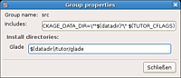 |
| Gruppen-Eigenschaften |
Jetzt muss nur noch der Installationspfad für dieses Ziel angegeben werden: Dazu geht man auf "src -> properties". Hier werden die "Group properties" angezeigt. Unter Glade trägt man dann $(datadir)/tutor/glade ein.
Der Quelltext zu diesem Beispiel¶
Diesen Quelltext kann man in die main.c kopieren. Danach musst nur noch auf "Generieren -> Generieren" klicken und das Programm ausführen. Dabei wird ein Fenster mit zwei Buttons geöffnet. Wenn man auf einen der Button klickt erscheint im Terminal button1 oder button2. Das Programm sollte selbsterklärend sein. Wenn man genauere Informationen über die Befehle erfahren möchte, schaut man die GTK - Referenz an.
1 2 3 4 5 6 7 8 9 10 11 12 13 14 15 16 17 18 19 20 21 22 23 24 25 26 27 28 29 30 31 32 33 34 | #include <stdio.h> #include <config.h> #include <gtk/gtk.h> #include <glade/glade.h> void on_button1_clicked(GtkButton*button,gpointer user_data) // Callback Funktion { g_print("button1\n"); } void on_button2_clicked(GtkButton*button,gpointer user_data) // Callback Funktion { g_print("button2\n"); } //Wenn das Programm installiert wird, sollte man die folgende //Zeile auskommentieren //#define GLADE_FILE PACKAGE_DATA_DIR"/tutor/glade/tutor.glade" #define GLADE_FILE "tutor.glade" GtkWidget* create_window (void) { GtkWidget *window; GladeXML *gxml; gxml = glade_xml_new (GLADE_FILE, NULL, NULL); // Glade Datei laden glade_xml_signal_autoconnect (gxml); // Signale mit Callback- Funktionen verbinden z.B. on_button1_clicked window = glade_xml_get_widget (gxml, "window1"); // Nach Widget window1 suchen und dem Pointer window zusweisen return window; } int main (int argc, char *argv[]) { GtkWidget *window; gtk_init (&argc, &argv); // Gtk Initialisieren window = create_window (); // Window erstellen mit der Glade Datei gtk_widget_show (window); // Window anzeigen gtk_main (); // Repeat schleifen - Wartet auf Signale z.B. Button klicken ... return 0; } |
GNOME Menüeintrag erstellen¶
Nett wäre es jetzt noch, wenn sich unser Programm beim Installieren direkt ins GNOME-Menü integrieren würde. Mit Anjuta ist das auch gar nicht schwer und es lässt sich auch mit dem bisher Gelernten erreichen:
Zuerst erstellt man ein weiteres Target mit dem Namen "Desktop_Menu" (Typ: Miscellaneous Data) und fügt eine neue Datei zum Projekt hinzu der man den Namen tutor.desktop gibt. Das alles geht analog zur obigen Anleitung: Dateien zum Projekt hinzufügen.
Da Menüeinträge im Normalfall durch ein spezifisches Icon gekennzeichnet werden, ist es sinnvoll, dass man seinem Programm ebenfalls eines spendiert. Wer möchte kann zu Testzwecken dieses verwenden. Das Icon kopiert man nach src/tutor.png und fügt die Datei zum Target "Desktop_Icon" hinzu, nachdem man es erzeugt hat.
Die Installationspfade unter Group Properties:
| Installationspfade | |
| Name | Pfad |
| Desktop_menu | $(datadir)/applications |
| Glade | $(datadir)/tutor/glade |
| Desktop_Icon | $(datadir)/pixmaps |
Die Datei tutor.desktop könnte z.B. folgendermaßen aussehen:
1 2 3 4 5 6 7 8 9 10 | [Desktop Entry] Version=0.1 Name=Tutor Version 0.1 Comment=Testanwendung Exec=tutor Icon=tutor Terminal=true Type=Application Categories=GNOME;GTK;Application;AudioVideo; StartupNotify=true |
Wenn man das Programm jetzt mit make install oder über "Generieren -> Install Projekt" installiert, wird ein neuer Menüeintrag mit dem Namen "Tutor" und dem gewählten Icon unter "Anwendungen -> Unterhaltungsmedien" erscheinen.
Source Paket und Ubuntu Paket erstellen¶
Quellcode weitergeben¶
Programme unter Linux werden oft als gepackter Quellcode mit der Dateibezeichnung "Name-Version.tar.gz" weitergeben. Dies hat den Vorteil, dass das Programm auf anderen Computern weiterbearbeitet werden kann. Darüber hinaus ist es so auch dadurch möglich Programme auf Nicht-Debian-Systemen zu installieren.
Um die Datei tutor-0.1.tar.gz zu erzeugen, gibt man im Terminal [3] den Befehl
make dist
ein. Unter Anjuta erreicht man dies durch "Generieren -> Build Tarball". Hierbei werden werden nur die Dateien gepackt, die notwendig für die Ausführung des Programms sind. Unwichtiges, wie Objektleichen oder Notizdateien werden weg gelassen. Damit das Make-System die hinzugefügten Dateien als notwendig erkennt, wird in der Datei src/Makefile.am folgendes ergänzt:
1 2 3 4 | EXTRA_DIST = \ $(Desktop_Menu_DATA) \ $(Glade_DATA) \ $(Desktop_Icon_DATA) |
und in der Datei Makefile.am:
1 2 3 | EXTRA_DIST = \ $(tutordoc_DATA) \ tutor.anjuta |
Das Beispielprogramm kann jetzt z.B. hier heruntergeladen werden: http://media.ubuntuusers.de/wiki/attachments/13/28/tutor-0.1.tar.gz 
Hinweis:
Bevor das Programm mit make install installiert wird, sollte die Zeile 15 in der main.c auskommentiert und die Zeile 16 gelöscht werden, da sonst die Glade-Datei nicht im richtigen Verzeichnis gesucht wird.
Debian Paket erstellen¶
Debian Pakete haben gewöhnlich die Dateiendung .deb und sollen jedem die einfache Installation deines Programms ermöglichen. Da Ubuntu ein Derivat von Debian ist, finden sie auch hier Verwendung. An dieser Stelle wird auf den Artikel Ubuntu-Pakete erstellen im Wiki verwiesen, in dem dieses Thema sehr ausführlich besprochen wird.
Fehler¶
Obwohl Anjuta 2.1 schon sehr stabil läuft, enthält es trotzdem noch einige Fehler und stürzt hin und wieder ab. Es kommt hin und wieder vor, dass Anjuta beim Eintragen des Installationspfades in die Datei Makefile.am am Ende des Pfades ein Leerzeichen zuviel einträgt. Das führt dazu, dass z.B. die .desktop-Datei nicht ins richtige Verzeichnis installiert wird.
Links¶
Entwicklungsumgebungen¶
Anjuta.org/
- u.a. weitere Tipps und Dokumentation Glade - A User Interface Designer
- zum grafischen Erstellen der Benutzeroberfläche
Literatur¶
GNOME 2.0 - Das Entwicklerhandbuch
 von Matthias Warkus (vergriffen, aber evtl. noch gebraucht erhältlich)
von Matthias Warkus (vergriffen, aber evtl. noch gebraucht erhältlich) Foundations of GTK+ Development
von Andrew Krause
- Erstellt mit Inyoka
-
 2004 – 2017 ubuntuusers.de • Einige Rechte vorbehalten
2004 – 2017 ubuntuusers.de • Einige Rechte vorbehalten
Lizenz • Kontakt • Datenschutz • Impressum • Serverstatus -
Serverhousing gespendet von